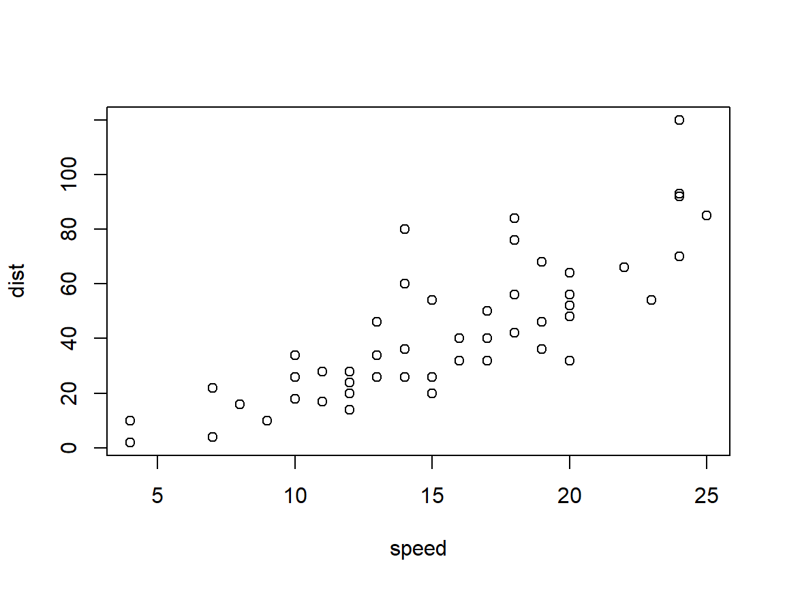
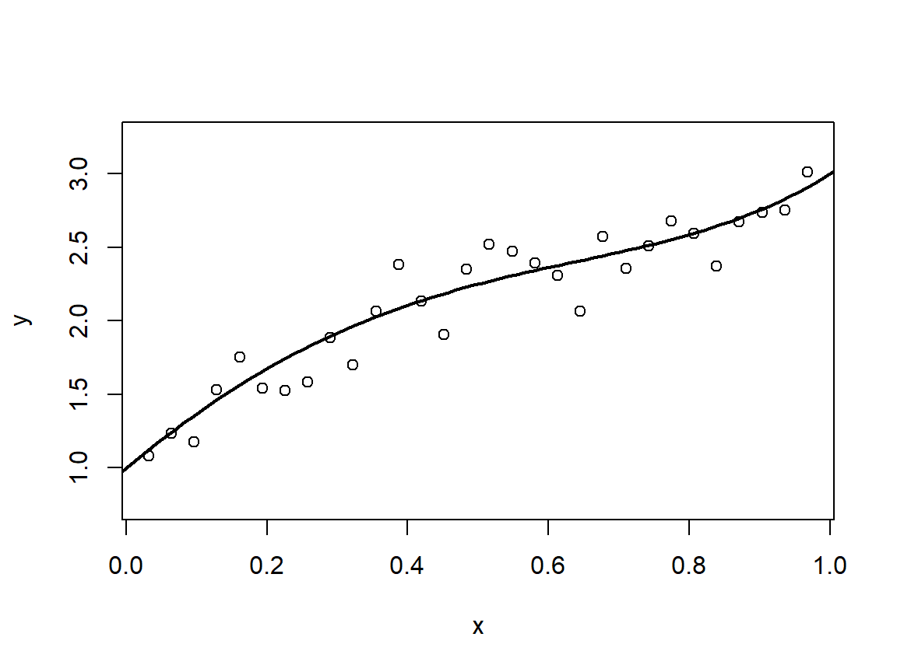

4 The Fundamentals of Predictive Modelling I
\[ \def\x{\mathbf{x}} \def\Rr{\mathbb{R}} \newcommand{\argmin}{\mathop{\rm argmin}} \newcommand{\argmax}{\mathop{\rm argmax}} \def\F{\mathcal{F}} \def\hbbeta{\hat{\boldsymbol{\beta}}} \def\bbeta{\boldsymbol{\beta}} \def\X{\mathbf{X}} \def\y{\mathbf{y}} \]
In the last chapter we discussed how multiple random variables may be dependent on one another, as well as some ways to quantify the strength of dependence.
So far, however, none of the variables had any special “importance” over the others.
We now turn to our main focus for this module, where we are particularly interested in using the dependence between variables in order to predict likely/reasonable values for a specific one of them, often called the response variable.
We will denote the response variable by \(Y\), and all \(p\) other variables are grouped as \(X = (X_1, X_2, ..., X_p)\), and are referred to as a vector of covariates.
We would like to use a sample of observations of \(Y\) and \(X\) in order to estimate a function, into which we can put new values for the covariates and obtain a prediction for what the response might be.
The response is sometimes called the dependent variable or target variable, while the covariates may be referred to as predictors.
A fundamental point worth making is that we generally cannot expect the covariates to “explain” absolutely everything about the response
Example: We may wish to predict a person’s lifespan (the response variable, \(Y\)) given their current age, blood pressure, BMI, whether they have diabetes, etc. (our covariates, \(X\))
But we do not assume that everyone who is 47 years old; has BP 128/83 and BMI 27.2 and is not diabetic will survive for exactly the same amount of time
Rather, there is a distribution of lifespans for people with these characteristics: the conditional distribution of \(Y\) given \(X\)
Predictive modelling is therefore about estimating functions which capture features of the conditional distribution(s) of \(Y|X\)
- E.g. these could be the most likely outcome, or the expected value (i.e., mean) of the outcome
- In more complex examples we may wish to estimate the entire conditional distribution(s) of \(Y|X\), which would allow us to answer very detailed questions. As with everything, however, there is a cost, and the more detail we want to estimate about a distribution the more variance we have to accept in our estimator
4.1 Two Archetypal Problems
Just as we distinguished discrete and continuous random variables, so too is it necessary to distinguish between what are the two archetypal predictive modelling problems
Regression typically refers to the context where the response variable is numeric
- Some would argue that all predictive modelling is a form of regression, but we will use this term to refer to the “standard” regression problem, where we assume the response variable takes on numeric values, usually continuous over some range.
Classification refers to the context where the response variable is categorical
Categorical variables take on a finite set of values, and typically we do not assume there is any ordering of categories
Typical examples include demographic characteristics like gender, race, etc.
Categorical variables are discrete, but even if we happen to name the categories as 1, 2 and 3 (for example) we do not necessarily interpret these as numbers in the real sense, since we can’t, for example, add two instances of category one and get a category two
Although we do not treat categories as numbers, whether we name them with the names of numbers or not, in some contexts it is sensible to invoke an ordering on categories
- For example we may wish to predict the grades (A, B, C, etc.) of statistics students. It is sensible to say “A is better than B is better than C” etc., but we still cannot add two B’s to get some other grade
We will start by focusing primarily on regression, as some of the fundamental principles associated with predictive modelling are most easily communicated in the regression context.
A Simple Example: Car Stopping Distances
The cars data set (included in R’s base distribution) contains
information documenting the distance needed to bring a car to halt (in
feet) for a variety of different initial speeds (in miles per hour,
mph).

Unsurprisingly the distance needed to stop a car increases with speed. Unsurprisingly, also, there is variability in the distances even for the same initial speeds. This would be the case even for the same drivers and the same models of car, due to variations in temperature, road surface, etc.
In the interest of safety we may wish to model this relationship, so that drivers may be aware of, for example, appropriate following distances depending on speed.
The function lm(formula, data) will fit the “line of best fit” to
these data. A formula object in R has the form y~x1 + x2 + … where
here y is the name of the response variable within the data frame
argument data, and x1 etc. are the names of the covariates we want
to include in our model. Here we only have a single covariate speed.
##
## Call:
## lm(formula = dist ~ speed, data = cars)
##
## Coefficients:
## (Intercept) speed
## -17.579 3.932Printing the model shows that the line of best fit has an intercept at
-17.579 and a slope of 3.932. We can add this line to our plot using the
function abline
Although the model does a reasonable job capturing the trend of the
relationship, it has some obvious limitations. For one, it has a
negative intercept and yet we know that distances must be non-negative.
There are multiple ways to ensure we do not obtain such a result. Note
that the intercept corresponds with the predicted value when all
covariates are equal to zero. In the current example it should be clear
that if the speed is zero (i.e. the car is not moving) then the distance
needed to stop is also zero. We can force R to set the intercept to zero
by modifying the formula as y~0 + x1 + x2 +… :
##
## Call:
## lm(formula = dist ~ 0 + speed, data = cars)
##
## Coefficients:
## speed
## 2.909It may be clear to you that the first model “looks better”. The line fits closer to the data points, on average. This is because the first model (despite giving some negative predictions) was allowed to choose the “best” value for the intercept, whereas the second model did not have such a choice. The first model had one extra degree of freedom, and is a more flexible model.
It is worth considering what the purpose of this modelling problem is, however. Given that we may be more concerned about stopping distances for high speeds, a model which gives negative predictions for small speeds may not be a problem if it is more accurate over the sorts of values we really care about. Recall that models do not have to be “right” in order to be useful.
4.2 Some Preliminaries
This is an appropriate place to pause briefly, before we continue to learn more about how to fit and assess predictive models, as there are important components of the “predictive modelling pipeline” which precede these phases.
However, as these are not the main focus of the module, and most of these are covered elsewhere in your degrees, we will only cover these superficially here. It is also the case that some of the reasons for why things are done the way they are will not be clear until we cover material which comes later on in the module.
4.2.1 Problem Objectives
It is crucial to be aware of what the problem to be addressed actually is, as well as what a “success” means in this context. This should inform which sort of models we might wish to consider, as well as which criteria we should use to select a final model (or models).
In the previous example whether we would have preferred the first or second model would have depended on whether we needed the model to appropriately “respect” physical laws (like not giving negative predictions for a distance) or whether we were willing to concede some “impossible” predictions for better accuracy “where it matters”.
It is hopefully clear that we want a predictive model to at least fairly accurately predict the target variable. However in some circumstances we may care more about why a model is giving the predictions it is.
- Let’s return to our diabetes example. It is undeniable that being able to predict whether someone is likely to develop type II diabetes is a useful thing. However, unless we are able to also propose interventions which can reduce this risk for high risk individuals, such information becomes less useful.
Some models have a fairly simple “structure”, in that the way they capture the relationships between the covariates and the response are easy to understand and sometimes quantify. We typically use the word “interpretable” in this context.
Although there are certainly many exceptions to this, it is generally the case that the more flexible/complex models (which are less interpretable) are able to provide more accurate predictions. As with everything, there is a trade-off.
4.2.2 Data Acquisition
Historically statisticians would design experiments with a particular goal in mind, and then subsequently have to go out “into the field” to collect their own data, which would allow them to address the problem they face. In this way the data could be gathered in a way which made them as amenable as possible to analysis; avoiding any deviations from what we previously referred to as “our modelling assumptions”. This experimental design remains extremely important, and necessary in fields like medicine and pharmaceuticals. However, these days many statisticians and data scientists working in industry will never actually be involved in the data collection process, nor in the design of the procedure by which the data are collected. More often data are “just collected” because “companies know that data are extremely valuable”. Very often the problems to be addressed, or experiments to conduct, or analyses to be done, only arise long after the data have been collected.
Nonetheless it is very important to be aware (wherever possible) of how data have been obtained as this will allow one to assess whether/which modelling assumptions are reasonable. It is also important to be aware of potential pitfalls associated with such instances. One important consideration is that one should not use the same data in order to decide on your problem objectives AND to perform the subsequent analysis unless one knows and fully understands the potential implications
- This is a form of what is known as data leakage, and can lead to substantial bias and poor decisions.
4.2.3 Exploratory Data Analysis
Once the data have been collected, there is typically an initial inspection, often referred to as Exploratory Data Analaysis (EDA). There are two types of EDA (i) an initial superficial inspection of data types, data integrity issues, and at most checking univariate statistics associated with the variables; and (ii) more in-depth inspection which may include checking relationships between variables, choosing potential transformations, checking for “outliers”, etc.
The more in-depth type of EDA should more appropriately be paired with the actual modelling phase, and should respect the boundaries associated with data splitting, which we come to in the next chapter. For now we only consider the initial EDA, briefly.
4.2.3.1 Initial EDA
The initial EDA is in place primarily to “get a feel for the data”, and to ensure they can actually be processed appropriately by the software we are choosing to use. This may include
Checking the types of variables:
How many numeric variables do I have, and how many categorical variables?
Are categorical variables nominal or ordinal?
Are categories within nominal variables all well enough represented, or are there some categories which only arise in one or a few data points?
Checking data integrity:
Are there any obvious erroneous data points? For example distances/volumes/etc. which have negative values.
Are there missing data? It is common that data sets have some entries which are missing, and handling missing data is an entire field of statistics. Missing data can simply be due to human (or digital) error in data capturing, but are also common in survey data where respondents may either not have information relevant to some questions or may choose to withhold that information.
Univariate statistics:
Simple summary statistics, like five-number-summaries, etc: These may highlight data integrity issues, such as implausible or impossible values.
Histograms: All other things being equal, numeric variables whose distributions are at least roughly symmetric and unimodal (have a single maximum or maximal region) are more amenable to analysis and inclusion in predictive models than very skewed ones. Sometimes simple transformations of variables which lead to “nicer” marginal distributions is beneficial.
Initial EDA should be fairly superficial, and in fact if not there is a risk of over analysis which can lead to problematic data leakage. Ultimately the initial EDA should ideally only be for checking data integrity and useability, and should not include steps which investigate the relationships between the covariates and the response.
We will cover some of the basic EDA tasks in the context of practical examples later on.
4.2.4 Data Cleaning and Pre-processing
Based on the outcomes of the EDA, we then go on to perform any tasks which are deemed important either to be able to process/handle the data, or to appropriately model the relationships therein.
Common steps include
Imputation of missing entries: As mentioned previously handling missing data is itself a broad field, and we will not go into much depth on the topic.
Removal of “problematic” cases: Some models are very sensitive (i.e. not robust) to observations which are far removed from the rest, or which don’t respect the general relationships between the variables among the other observations.
- Removal of observations is a controversial topic, and ultimately it is down to the person conducting the modelling whether to remove points or to modify the model to make it more robust to these cases.
Scaling: Some models are sensitive to the scale on which covariates are measured/captured. What this means is that, unless appropriately scaled to have similar overall variation, the variables which have larger scale will have a greater influence on the model purely by nature of how they were captured and not because they are intrinsically important to the prediction task.
Categorical Covariates and Dummy Variables
Because of the frequency with which categorical covariates arise in practice is so high, and the potentially very misleading results which could arise if we incorrectly handle them, we will look in a little bit of depth at the pre-processing needed to handle them.
Although we spoke about the distinction between regression and classification when the response variable is either numeric or categorical, many models in their standard formulation do not handle categorical covariates directly.
It should be pointed out that we can “force the issue” artificially by naming our categories with numbers, and then treating the categorical variables as though they are numeric. This will not stop R from processing the data as instructed, however it should be clear that this is inappropriate, not least of all because by treating the categories as numbers we are imposing some ordering on them which may be totally inappropriate.
- For example: If we had data related to difference species of animal and one of our covariates described the family of species as, e.g. feline, canine and ovine, then if we decided to encode these as
feline = 1,canine = 2andovine = 3, if we treated these as numbers we would be saying that a cat plus a sheep is equal to two dogs!
- For example: If we had data related to difference species of animal and one of our covariates described the family of species as, e.g. feline, canine and ovine, then if we decided to encode these as
It is also worth pointing out that in some case categorical variables will have been stored as numeric and we have to convert these to categorical in order for R to “do the right thing”. We will encounter some instances of this as we go forward.
The most common approach for handling categorical variables is with the use of dummy variables. Specifically, suppose one of the covariates, say \(X_j\), is a categorical variable with \(K\) different categories. To capture the information in this variable we can replace \(X_j\) with \(K-1\) 0/1 (binary) variables so that if an observation of \(X_j\) is in the \(k\)-th category (for \(k = 1, ..., K-1\)) we set all of these 0/1 variables except the \(k\)-th equal to zero, and the \(k\)-th equal to one. And if the observation is in category \(K\) we simply set them all to zero.
Hopefully it can be seen that the information in these \(K-1\) dummy variables is equivalent to the single categorical variable since we can easily recreate each perfectly from the other. It should also be clear that encoding the data in this way does not impose any ordering on the categories.
4.2.5 Feature Engineering and Transformation
In some situations the data are not in an appropriate format for modelling using standard approaches. For example longitudinal data include measurements taken over time, and the timing and number of measurements may differ by individual. Other examples include image and text data, which do not fit the format of a response variable \(Y\) and a vector of covariates \(X\), a format typically referred to as “tabular data”.
Historically feature engineering, that is the derivation of covariates from either multiple other covariates or these “non-standard” data formats, was frequently achieved using domain knowledge or common sense approaches. The advent of neural networks, which build the feature engineering into the model training process, however, has utlimately eclipsed these “manual” approaches in many contexts.
4.3 Model Training
From the point of view of statistical learning, the primary topics of interest relate to the tasks of model training and model selection. These are strongly related topics, and we cover the basics of training from the point of view of regression in this chapter. Training is a term which emerged in the machine learning literature, which ultimately refers to the process of estimating, or fitting a predictive model.
4.3.1 Regression
For simplicity we focus, for now, on the context where \(Y\) is a numeric variable, and the problem of predicting \(Y\) from \(X\) is called regression.
Since we cannot expect \(X\) to explain everything about \(Y\), we typically describe the relationship between them via the regression equation: \[ Y = g^*(X) + \epsilon, \] where \(g^*\) is the “true” regression function and \(\epsilon\) is called the residual and characterises what \(X\) does not explain/capture about \(Y\)
Statistically we treat \(\epsilon\) as a random variable, and assume that it has mean zero (\(E[\epsilon] = 0\)) and is independent of \(X\)
When \(\epsilon\) and \(X\) are not independent, for example the variance of the residual may be different for different \(X\), we can sometimes transform \(Y\) (and hence \(\epsilon\)) in such a way that they become closer to independent
- Recall: “all models are wrong, but some are useful”
Note that \(E[\epsilon] = 0 \Rightarrow E[Y|X] = g^*(X)\). That is, the function \(g^*(X)\) captures the conditional expectation of \(Y\) given \(X\).
In fact very often we make the further assumption that \(\epsilon\) has a normal distribution.
- Why might a normal distribution be a reasonable assumption? One way to think of the reason why we have a residual term at all, i.e. why the covariates don’t explain absolutely everything about \(Y\), is simply that there are other factors which contribute to the variation in the values of \(Y\) which we have not measured (i.e. factors which are not included in the covariates we actually have). If we think of the residual as being the sum of all the contributions from these unmeasured factors, and we know that summing random variables together often results in a roughly normal distribution, we can see that the treating the overall effect of these unmeasured factors as normally distributed is not unreasonable. There are many other arguments, such as the fact that for fixed variance the normal distribution is the “most uncertain” in an information theory sense and it may be prudent to presume the least amount of knowledge about the residual; as well as the fact that mathematically the normal distribution is “nice to work with”.
A Simulated Example
The following piece of code simulates potential values of the response variable for pairing with values of a single covariate, \(X\), which are equally spaced on the interval \((0, 1)\), and where the regression equation is given by \[ Y = 1+4X-3X^2-X^3+2X^4 + \epsilon, \] where \(\epsilon \sim N(0, 1/25)\). That is, the regression function \(g^*\) is a degree four polynomial and the residual term is a normal random variable with standard deviation \(1/5\).
### The regression function, a degree 4 polynomial
g <- function(x) 1 + 4*x - 3*x^2 - x^3 + 2*x^4
### For now we will fix thiry values of X equally spaced
### in the interval (0, 1)
X <- 1:30/31
### We can simulate potential values for Y associated with
### these, by adding residuals. We will simulate residuals
### from a N(0, 1/25) distribution
y <- g(X) + rnorm(30, sd = 1/5)
plot(X, y, xlab = 'x', ylim = c(0.75, 3.25))
### We can also add the line showing the true regression function
lines(seq(-.1, 1.1, length = 100), g(seq(-.1, 1.1, length = 100)), lwd = 2)
But the realisations of \(Y\) could be different even if the values of \(X\) didn’t change, since for each \(X\) there is an entire distribution of \(Y|X\). If you re-run the code you will see a different set of potential realisations.
4.3.1.1 Fitting Regression Models
In practice we have access to a sample of realisations of \(Y\) and \(X\), \(\{(y_1, \mathbf{x}_1), (y_n, \mathbf{x}_n)\}\), and from this we want to estimate the regression function \(g^*\)
In predictive modelling we often talk about fitting models, or in the machine learning context “training” them
The sample of observations used to estimate/fit/train the model is often called the “training set”, and this terminology will become more important in the following chapter
Estimating functions is, however, in general not as straightforward as estimating the parameters of a distribution.
We need to first ask ourselves “what do we want from our model?”
Ultimately we want to use our regression model in order to predict likely/appropriate values for the response: We would like for our predictions to be close to the actual values.
- Although the importance of interpretability of the model must in some contexts not be overlooked, a model which doesn’t actually predict the response accurately at all is not really modelling the relationships between the response and covariates appropriately, and hence the interpretations it offers may be meaningless.
The first step is therefore to ensure that the predicted values for the responses in our training set are in general similar to their actual values
If they aren’t then we couldn’t reasonably expect the predictions for new sets of covariates to be close to their corresponding responses
- We already know the values for \(Y\) in our sample, and our ultimate goal is to use our model to obtain predictions on sets of covariates from other members of the population from which our sample came
We thus seek to quantify how similar/dissimilar our predictions are to/from the actual values, by way of a loss function.
Some Notation:
Returning to the “hat” notation, we will refer to our fitted regression model/function as \(\hat g\), and for a specific prediction (i.e. for a fixed \(\mathbf{x}\)) we sometimes use \(\hat y\) to be the predicted value, \(\hat y = \hat g(\mathbf{x})\)
When considering the statistical properties of \(\hat g\), we again (as in Chatper 3) think of a random sample (random training set), \((Y_i , X_i); i = 1, ..., n\), and \(\hat g\) becomes a random function
We differentiate the notation for a prediction by using \(\hat Y\) to be the predicted value from the random function \(\hat g\) , i.e. the one trained on the random sample
We will use \(L\) to denote the (generic) loss function, and it takes two arguments: \(y\) and \(\hat y\) (or \(Y\) and \(\hat Y\), depending on context)
Returning to the fact that we want the predictions on our training sample, i.e. \(\hat y_i = \hat g (\x_i); i = 1, ..., n\) to be close to the actual \(y_i\)’s, we can seek to characterise how different they are overall by the average training loss \[ L_{train}(\hat g) = \frac{1}{n}\sum_{i=1}^n L(y_i, \hat g(\x_i)) \]
We will typically refer to this as the training error
\(L_{train}\) is a function of \(\hat g\) since if we had a different \(\hat g\) we’d have a different training error
Given our objective, it would be sensible to choose our fitted model as that which gives the smallest training error \[ \hat g = \argmin_{g \in \mathcal{F}} \frac{1}{n} \sum_{i=1}^n L(y_i, g(\x_i)). \]
- There are crucial subtleties at play, which we get into in Chapter 5, but for now we will work with this objective of minimising training error
Explaining the notation:
- The object \(\mathcal{F}\) is a collection of functions from which we are allowed to select our fitted model, and we will go into this more later on
- “argmin” means an element in this collection which gives the lowest possible training error
- \(g^*\) vs \(g\) vs \(\hat g\): \(g^*\) is the “TRUE” regression function, \(g\) is an arbitrary function in \(\mathcal{F}\) (a “potential candidate for \(\hat g\)”), and \(\hat g\) is the actual member of \(\mathcal{F}\) which we choose
4.3.2 A Concrete Example: Simple Linear Regression
So far we have considered things at a very high level. We now consider a very straightforward example, the simple linear regression model. At this stage the main decision points when facing a regression problem are (i) “which loss function should I use?”, and (ii) “from which collection of functions should I select my estimate?”.
In the context of regression it is sensible to quantify the dissimilarity between the true and predicted responses with some measure of the distance between them. For example, we may define our loss function to be either the squared error, \(L(y, \hat y) = (y- \hat y)^2\); or the absolute error, \(L(y, \hat y) = |y - \hat y|\). As it turns out the function which minimises the squared error loss over the entire distribution of potential values for \(X\) and \(Y\) is the function \(g^*(\x) = E[Y|X=\x]\). It is for this reason (as well as some others) that the squared error loss is by far the most commonly used loss function in the standard regression context.
- The function which minimises the absolute error over the whole distribution is the function whose output is the conditional median of \(Y|X\).
Now, in the “simple” regression context we have only a single covariate, \(X\), and when we talk about linear regression we mean that the class of functions from which we select our estimate, \(\mathcal{F}\), is specifically all linear (or more correctly affine) functions of the covariate, i.e. each \(g\) in \(\mathcal{F}\) may be written as \[ g(x) = \beta_0 + \beta_1 x, \] for some real numbers \(\beta_0\) and \(\beta_1\).
- \(\beta_0\) and \(\beta_1\) parameterise the function \(g\) and we say that \(\F\) is a parametric class, since all the functions in \(\F\) have the same general form, and as long as we know the values of the parameters we can combine them with this general form in order to express/define the function fully
Since each candidate for \(\hat g\) can be written in this form, we must also have \[ \hat g(x) = \hat \beta_0 + \hat \beta_1 x, \] where \[ \hbbeta = \argmin_{\bbeta \in \Rr^2} \frac{1}{n}\sum_{i=1}^n \left(y_i - \beta_0 - \beta_1 x_i\right)^2. \]
We refer to \(\hbbeta\) as the (estimated) vector of regression coefficients, with \(\hat \beta_0\) called the intercept term as this is the point where the function \(\hat g\) cuts through the “y-axis”.
- We already saw the simple linear regression model informally when we
looked at the
carsdata at the start of this chapter.
The formulation above is (hopefully) a lot less scary than the general problem of choosing the “best” function from a collection of functions, since now we are just looking for the “best” two numbers (values for the \(\hat \beta\)’s).
Generally speaking optimisation of parametric functions; those which only depend on a fixed number of values (the function’s parameters) is comparatively more straightforward than general “functional optimisation”.
- You will cover the topic of optimisation, how we actually go about finding these optimal parameters, in the Foundations of Data Science and AI module
In the case of simple linear regression, there is a closed form solution for the optimal parameters, meaning we don’t actually need an optimisation algorithm to find them. In particular we have\[ \hbbeta = (\X^\top \X)^{-1}\X^\top \y, \]
where
- \(\X\) is the \(n \times 2\) matrix with \(i\)-th row \((1, x_i)\).
- \(\y\) is the vector \((y_1, y_2, ..., y_n)^\top\).
In fact even if we had more than one covariate, and so would have our estimated linear (affine) function expressed as \(\hat g(\x) = \hat\beta_0 + \sum_{j=1}^p \hat \beta_j x_j\), the equation above would still provide the optimal solution except \(\X\) would change so that the rows are of the form \((1, \x_i^\top)\). We will look briefly at this multiple linear regression in far more depth in Chapter 6.
- A quick note on notation. As mentioned in Chapter 3 we will use bold font to indicate vectors and faint font for individual values of a variable. For example, when we have a single covariate our observations of that covariate are \(x_1, ..., x_n\). On the other hand if we have multiple covariates then our observations are \(\x_1, ..., \x_n\) and the \(j\)-th element of \(\x_i\) will be written as \(x_{ij}\). In this context we will also need to express our regression function (either estimated or “true”) as taking a generic vector argument \(\x = (x_1, ..., x_p)^\top\), and so there is some overlap between the notation for the \(i\)-th element of the generic vector argument \(\x\) and the \(i\)-th observation of a single covariate. However, there should be no ambiguity as the contexts in which these will arise are distinct.
Simple Linear Regression in R
Let’s return to the cars data set we saw earlier. We already saw that
the function lm produces a “line of best fit”, and in fact is solving
the optimisation problem which minimises the training error, using the
squared error loss function. We can validate this by comparing its
output with the closed form solution described above
### Our X matrix described above has a column of ones followed
### by a column containing the single covariate. We can use
### the cbind function to produce this
X <- cbind(1, cars$speed)
### Next we can find the coefficients for the best linear fit to the data
y <- cars$dist
beta_hat <- solve(t(X)%*%X)%*%t(X)%*%y
beta_hat## [,1]
## [1,] -17.579095
## [2,] 3.932409You may recall these are indeed what we saw from the output of the
function lm. For the vast majority of the time we will be using
existing functions in R’s numerous libraries. Many of these will be more
versatile and efficient than our own code, however being able to
validate these existing implementations, when possible, is beneficial.
The output of lm contains more than just the estimates for
\(\hat \beta_0\) and \(\hat \beta_1\). For example, it also contains the
field $fitted.values which is the vector of values
\((\hat y_i, ..., \hat y_n)^\top\) from the model. We can use this to
evaluate the training error:
## [1] 227.0704A Straightforward Extension: Simple Polynomial Regression
An obvious question which might arise is “why linear?”.
We will look to far greater depth at flexible regression models later on, but for now we simply engage in a an illustrative experiment using polynomials:
If \(\F\) contains all degree \(d\) polynomials of our covariate, then we will have \[ \hat g(x) = \hat \beta_0 + \sum_{j=1}^d \hat \beta_j x^j, \] where \[ \hbbeta = \argmin_{\bbeta \in \Rr^{d+1}} \frac{1}{n}\sum_{i=1}^n \left(y_i - \beta_0 - \sum_{j=1}^d \beta_j x_i^j\right)^2. \]
Within an R formula we can use the function poly(variable, degree, raw = TRUE) to
produce a polynomial expression, and so directly fit such a model using
the lm function.
- The argument
raw = TRUEtells the function not to transform thevariableargument in any way, which it would do by default otherwise.
The following code will fit a quadratic (degree 2 polynomial) function
to the cars data set, and then plot the result and evaluate the
training error.
### First plot the data again
plot(cars)
### Now we fit the model
model2 <- lm(dist~poly(speed, 2, raw = TRUE), data = cars)
### We now cannot use the abline function to illustrate the fit, but can use
### predict(model, new_data) for a range of speeds (e.g. 0 to 30) and use
### the function lines() to add to the plot. The new data argument must
### have the same covariates as the data used to fit the model:
new_data <- data.frame(speed = seq(0, 30, length = 100))
lines(new_data$speed, predict(model2, new_data))### We can use the same command again to evaluate the training error
mean((cars$dist - model2$fitted.values)^2)## [1] 216.4943- How does this training error compare with the training error from the linear model? Ask yourself “Is this what I expected?”
Notice that the expression \(\hat \beta_0 + \sum_{j=1}^d \hat \beta_j x^j\) has remarkable similarity to the equation describing the fitted muliple linear regression model \(\hat \beta_0 + \sum_{j=1}^p \hat \beta_j x_j\). The only difference is that instead of the single covariate raised to power \(j\) we have the \(j\)-th from \(p\) total covariates, i.e. we see \(x_j\) instead of \(x^j\). Indeed fitting the degree \(d\) polynomial regression model is equivalent to fitting the multiple linear regression model where we use the “engineered features” \(X_2 = X^2, X_3=X^3, ..., X_d=X^d\). We could therefore equally apply the closed form expression for the multiple linear model after creating these features for ourselves.
### Start by creating our new X matrix with a column of
### ones and then the single covariate raised to each of the
### powers 1 to d, where to match the above we have d=2
d <- 2
X <- sapply(0:d, function(j) cars$speed^j)
# make sure you understand why this is creating the matrix it should
y <- cars$dist
beta_hat <- solve(t(X)%*%X)%*%t(X)%*%y
### We can check that the solutions are the same:
cbind(beta_hat, model2$coefficients)## [,1] [,2]
## (Intercept) 2.4701378 2.4701378
## poly(speed, 2, raw = TRUE)1 0.9132876 0.9132876
## poly(speed, 2, raw = TRUE)2 0.0999593 0.0999593- Using these nonlinear transformations of the covariate(s) as additional features/“covariates” is a principled approach, and we will cover this idea in greater detail in Chapter 8.
4.4 Summary
One of the major components of statistical learning is how we go about “training” predictive models
- Two important decision points are (i) which loss function should we use for training, and (ii) which “sort of functions” should we choose our estimate from?
Even before we get to the training phase, however, we should ideally
Be fully aware of what the problem objectives are, as this could inform how we choose our loss function and collection of functions \(\F\)
- For example, if it is necessary that the model is reasonably interpretable, then we should choose \(\F\) to contain only models which allow for interpretation
Be aware of how the data have been obtained/collected, as these will help determine which modelling assumptions are reasonable to make
Perform appropriate EDA and cleaning/preprocessing to ensure we can actually apply the methods we want during training (and the steps which come later)
We saw that linear regression is a type of predictive modelling where we fit linear/affine funtions (our class \(\F\)) to capture the relationship(s) between \(X\) and a numeric response \(Y\)
We saw a simple extension where we introduce non-linearities using “powers” of the covariate (polynomials) using the
poly()function within a linear regression model- We also saw that this is equivalent to adding to our covariate some additional “covariates” which are “engineered” from the original covariate, and then applying linear regression
4.5 Exercises
- Refer to the
carsdata set. Fit polynomial models for degrees up to eight, to predictdistfromspeed. Compare the fits visually and numerically. What do you think about which model(s) is/are likely to be the best?
1^*. (optional) Use the bootstrap to estimate the variance of the coefficient estimators for the polynomial models in Q 1. above.
- Download the
nhanes.RDatafile in the R Scripts folder on Moodle. Load the data usingload(<full path to filename>)or set the working directory to the location where the file lies and useload("nhanes.RData"). This is a small subset of the National Health And Nutrition Examination Survey data set. If you want details on the specific variables which have been included, you can install and load theNHANESpackage and then callhelp(NHANES).
The goal is to predict Mean Arterial Pressure (MAP; defined as Diastolic Blood Pressure + \(\frac{1}{3}\)(Systolic - Diastolic Blood Pressure)) using the non Blood Pressure related variables.
Perform some EDA and data pre-processing, before fitting a linear regression model (or multiple models) to predict MAP.
- Note that some of the factor variables might reasonably be treated as numeric. That is not to say they should, but if you want to you could consider models which treat them as factors and ones which treat them as numeric.